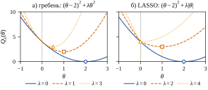
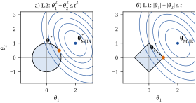
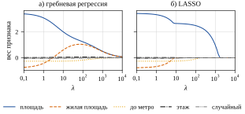

6 Регуляризация
В гл. 3 и 5 переобучение проявлялось по-разному: при почти совпадающих признаках решение МНК менялось от малейшего изменения ответов, а многочлен высокой степени колебался между точками. В этой главе описано средство борьбы с таким переобучением — регуляризация: к эмпирическому риску добавляют штраф за величину весов.
6.1 Штраф за большие веса
Вспомним пример с почти совпадающими признаками из гл. 3. Изменение ответа y_3 всего на 0,1 (с 6,1 до 6,0 или до 6,2) переводило решение из (1;\, 1) в (0;\, 2) или (2;\, 0), хотя все три решения почти одинаково точно описывали обучающую выборку. Среди моделей с почти равной ошибкой МНК выбирает случайно, под влиянием шума. Естественно добавить к ошибке требование, которое сделает выбор однозначным: при прочих равных предпочитать модель с меньшими весами.
Регуляризованный функционал качества имеет вид
Q_\lambda(\boldsymbol{\theta}) = \|\mathbf{F}\boldsymbol{\theta} - \mathbf{y}\|_2^2 + \lambda \, R(\boldsymbol{\theta}),
где первое слагаемое — сумма квадратов остатков, R(\boldsymbol{\theta}) — штраф, растущий с величиной весов, а \lambda \ge 0 — коэффициент регуляризации. В этой главе сумма квадратов записана без множителя 1/\ell, как в документации scikit-learn: множитель лишь меняет масштаб \lambda, а точка минимума остаётся прежней.
Читаем формулу. Слагаемые предъявляют к весам противоположные требования: первое — точно описать обучающую выборку, второе — оставаться малыми. Коэффициент \lambda задаёт, что важнее. При \lambda = 0 получается обычный МНК; при очень большом \lambda все веса стремятся к нулю, и модель предсказывает константу. Между этими крайностями — компромисс между смещением и разбросом (гл. 5): штраф уменьшает разброс модели ценой некоторого смещения. Коэффициент \lambda — гиперпараметр: метод обучения его не находит. Его выбирают перебором, как степень многочлена в гл. 5: для каждого значения из сетки оценивают ошибку модели кросс-валидацией и берут значение с наименьшей ошибкой.
Свободный член \theta_0 не штрафуют: он задаёт средний уровень ответа и с переобучением не связан. Если бы его штрафовали, результат зависел бы от начала отсчёта ответов: после вычитания из всех цен 5 млн руб. прогнозы уменьшились бы не ровно на 5 млн. Поэтому суммы в штрафах ниже начинаются с j = 1. На практике признаки стандартизуют, а из ответов вычитают их среднее \bar y; тогда \theta_0 = \bar y, а остальные веса находят по матрице \mathbf{F} без столбца из единиц.
6.2 Гребневая регрессия
Если штраф — квадрат евклидовой нормы вектора весов, получается гребневая регрессия (ridge regression), или регуляризация Тихонова:
Q_\lambda(\boldsymbol{\theta}) = \|\mathbf{F}\boldsymbol{\theta} - \mathbf{y}\|_2^2 + \lambda \|\boldsymbol{\theta}\|_2^2 = \sum_{i=1}^{\ell} \bigl(\langle \boldsymbol{\theta}, \mathbf{x}_i \rangle - y_i\bigr)^2 + \lambda \sum_{j=1}^{n} \theta_j^2.
Градиент первого слагаемого найден в гл. 3 (без множителя 1/\ell он равен 2\mathbf{F}^{\mathrm{T}}(\mathbf{F}\boldsymbol{\theta} - \mathbf{y})), градиент второго равен 2\lambda\boldsymbol{\theta}. Приравняв сумму к нулю, получаем
(\mathbf{F}^{\mathrm{T}} \mathbf{F} + \lambda \mathbf{I}) \boldsymbol{\theta} = \mathbf{F}^{\mathrm{T}} \mathbf{y}, \qquad \boldsymbol{\theta}^*_\lambda = (\mathbf{F}^{\mathrm{T}} \mathbf{F} + \lambda \mathbf{I})^{-1} \mathbf{F}^{\mathrm{T}} \mathbf{y},\tag{6.1}
где \mathbf{I} — единичная матрица.
Читаем формулу. Отличие от нормальной системы МНК — слагаемое \lambda \mathbf{I}: к каждому диагональному элементу матрицы \mathbf{F}^{\mathrm{T}} \mathbf{F} прибавляется \lambda. Отсюда название: на диагонали вырастает «гребень». Матрица \mathbf{F}^{\mathrm{T}} \mathbf{F} + \lambda \mathbf{I} при \lambda > 0 всегда обратима — даже если признаки линейно зависимы и решение МНК не единственно.
Пример. Проверим, как гребень действует на пример из гл. 3: \mathbf{F} со строками (1;\, 1), (2;\, 2), (3;\, 3{,}1) и ответы \mathbf{y} = (2;\, 4;\, 6{,}1). При \lambda = 0{,}1
\mathbf{F}^{\mathrm{T}} \mathbf{F} + 0{,}1 \mathbf{I} = \begin{pmatrix} 14{,}1 & 14{,}3 \\ 14{,}3 & 14{,}71 \end{pmatrix}, \quad \mathbf{F}^{\mathrm{T}} \mathbf{y} = \begin{pmatrix} 28{,}3 \\ 28{,}91 \end{pmatrix}.
Определитель этой матрицы равен 14{,}1 \cdot 14{,}71 - 14{,}3^2 = 2{,}921 — почти в 60 раз больше, чем 0,05 без гребня. Решение:
\boldsymbol{\theta}^*_\lambda = \frac{1}{2{,}921} \begin{pmatrix} 14{,}71 \cdot 28{,}3 - 14{,}3 \cdot 28{,}91 \\ -14{,}3 \cdot 28{,}3 + 14{,}1 \cdot 28{,}91 \end{pmatrix} = \frac{1}{2{,}921} \begin{pmatrix} 2{,}880 \\ 2{,}941 \end{pmatrix} \approx \begin{pmatrix} 0{,}99 \\ 1{,}01 \end{pmatrix}.
Повторим расчёт для y_3 = 6{,}0 и y_3 = 6{,}2 и для \lambda = 1 (табл. 6.1).
| Величина | МНК, \lambda = 0 | \lambda = 0{,}1 | \lambda = 1 |
|---|---|---|---|
| y_3 = 6{,}0 | (2; 0) | (0,99; 0,98) | (0,95; 0,96) |
| y_3 = 6{,}1 | (1; 1) | (0,99; 1,01) | (0,96; 0,98) |
| y_3 = 6{,}2 | (0; 2) | (0,98; 1,03) | (0,96; 0,99) |
| Прогноз для объекта (2;\, 3) | от 4 до 6 | от 4,92 до 5,06 | от 4,79 до 4,89 |
Таблица показывает три эффекта. Решение стало устойчивым: при изменении y_3 на 0,1 веса меняются на сотые доли, а прогноз для нового объекта — на 3 % вместо 50 %. Гребень выбрал из всех почти равноценных решений то, в котором вес поровну разделён между двумя одинаковыми признаками, — это решение с наименьшей нормой. Наконец, с ростом \lambda растёт ошибка на обучающей выборке (при y_3 = 6{,}1 MSE равна 0 для МНК, 0,0002 при \lambda = 0{,}1 и 0,022 при \lambda = 1), и прогнозы систематически занижаются: при \lambda = 1 модель предсказывает для третьего объекта 5,89 вместо 6,1. Это смещение — цена устойчивости, поэтому \lambda не должен быть слишком большим.
Сингулярное разложение. Подставив \mathbf{F} = \mathbf{V}\mathbf{D}\mathbf{U}^{\mathrm{T}} (гл. 3) в (6.1), получим
\boldsymbol{\theta}^*_\lambda = \sum_{j=1}^{n} \frac{s_j}{s_j^2 + \lambda} \, \mathbf{u}_j \, (\mathbf{v}_j^{\mathrm{T}} \mathbf{y}).
В решении МНК на месте дроби стоял множитель 1/s_j, который при малом сингулярном числе s_j становился огромным. Теперь при s_j^2 \gg \lambda дробь почти равна 1/s_j — направления, хорошо определённые данными, гребень почти не трогает. А при s_j^2 \ll \lambda дробь близка к s_j/\lambda и мала — неустойчивые направления подавляются. В примере s_2 \approx 0{,}042: множитель МНК 1/s_2 \approx 24, а при \lambda = 0{,}1 он равен 0{,}042/(0{,}0017 + 0{,}1) \approx 0{,}41. Число обусловленности матрицы системы уменьшается с s_1^2/s_2^2 \approx 16\,400 до (s_1^2 + \lambda)/(s_2^2 + \lambda) \approx 280.
6.3 LASSO
Если штраф — сумма модулей весов, получается метод LASSO (least absolute shrinkage and selection operator):
Q_\lambda(\boldsymbol{\theta}) = \|\mathbf{F}\boldsymbol{\theta} - \mathbf{y}\|_2^2 + \lambda \|\boldsymbol{\theta}\|_1 = \sum_{i=1}^{\ell} \bigl(\langle \boldsymbol{\theta}, \mathbf{x}_i \rangle - y_i\bigr)^2 + \lambda \sum_{j=1}^{n} |\theta_j|.
Модуль не дифференцируем в нуле, и формулы решения, как (6.1), нет; минимум ищут численно. Зато у LASSO есть свойство, которого нет у гребневой регрессии: при достаточно большом \lambda часть весов становится в точности нулевой. Признаки с нулевыми весами модель не использует, поэтому LASSO одновременно обучает модель и отбирает признаки.
Почему веса зануляются. Рассмотрим простейший случай: столбцы \mathbf{F} ортонормированы, \mathbf{F}^{\mathrm{T}} \mathbf{F} = \mathbf{I}. Тогда решение МНК — вектор \mathbf{a} = \mathbf{F}^{\mathrm{T}} \mathbf{y}, а сумма квадратов остатков раскладывается на независимые слагаемые: \|\mathbf{F}\boldsymbol{\theta} - \mathbf{y}\|_2^2 = \sum_j (\theta_j - a_j)^2 + \text{const}. Каждый вес находится отдельно. Для гребневой регрессии минимум (\theta_j - a_j)^2 + \lambda\theta_j^2 даёт
\theta_j = \frac{a_j}{1 + \lambda}
— вес МНК уменьшается в одно и то же число раз и нулём не становится. Для LASSO при \theta_j > 0 производная функции (\theta_j - a_j)^2 + \lambda|\theta_j| равна 2(\theta_j - a_j) + \lambda, она обращается в нуль при \theta_j = a_j - \lambda/2, но только если a_j > \lambda/2; случай \theta_j < 0 симметричен. Если же |a_j| \le \lambda/2, минимум достигается в нуле. Итого
\theta_j = \operatorname{sign}(a_j) \max\bigl(|a_j| - \lambda/2,\; 0\bigr).
Читаем формулы. Гребневая регрессия сжимает все веса пропорционально, LASSO сдвигает их к нулю на постоянную величину \lambda/2, а веса меньше \lambda/2 по модулю обнуляет. Причина — в производной штрафа. Производная \lambda\theta_j^2 равна 2\lambda\theta_j и вблизи нуля исчезает: штраф почти не мешает малому весу оставаться ненулевым. Производная \lambda|\theta_j| по модулю всегда равна \lambda: штраф тянет вес к нулю с постоянной силой, и если данные «тянут» его в другую сторону слабее, вес становится нулевым.
6.4 Геометрический смысл
Требование «предпочитать малые веса» можно выразить двумя способами. Мягкое ограничение — штраф: веса могут быть любыми, но за большие веса приходится платить, и минимизируется Q_\lambda. Жёсткое ограничение — веса обязаны лежать в заданной области, а внутри неё ищется минимум суммы квадратов остатков:
\|\mathbf{F}\boldsymbol{\theta} - \mathbf{y}\|_2^2 \to \min_{\boldsymbol{\theta}} \quad \text{при условии} \quad \|\boldsymbol{\theta}\|_2^2 \le t^2
для гребневой регрессии и при условии \|\boldsymbol{\theta}\|_1 \le t для LASSO. Число t — радиус допустимой области. Две постановки эквивалентны: каждому \lambda > 0 соответствует такое t, что решения задач совпадают, и наоборот; чем больше \lambda, тем меньше t.
Почему постановки эквивалентны. Рассмотрим гребневую регрессию. Если решение МНК лежит внутри круга радиуса t, ограничение ничего не меняет, и это соответствует \lambda = 0. Иначе решение задачи с ограничением лежит на границе круга, в точке, где линия уровня суммы квадратов остатков касается окружности. Сумма квадратов убывает в сторону решения МНК, то есть за пределы круга, и в точке касания её антиградиент направлен по радиусу наружу. Значит, градиенты суммы квадратов и штрафа \|\boldsymbol{\theta}\|_2^2 (он направлен по радиусу наружу) противоположны: \nabla \|\mathbf{F}\boldsymbol{\theta} - \mathbf{y}\|_2^2 = -\lambda \nabla \|\boldsymbol{\theta}\|_2^2 при некотором \lambda > 0. Но это равенство и есть условие минимума Q_\lambda: градиент суммы \|\mathbf{F}\boldsymbol{\theta} - \mathbf{y}\|_2^2 + \lambda \|\boldsymbol{\theta}\|_2^2 равен нулю. Решение задачи с ограничением — минимум функционала со штрафом при этом \lambda. Число \lambda называют множителем Лагранжа, а сам приём — методом множителей Лагранжа.
Как штраф сдвигает решение, проще всего увидеть на модели с одним признаком и одним весом: g(x, \theta) = \theta f(x), без свободного члена (рис. 6.1). Пусть МНК даёт для неё вес \theta = 2, а сумма квадратов остатков с точностью до постоянного слагаемого равна (\theta - 2)^2 — так получается, когда столбец признака имеет единичную длину, как в случае ортонормированных признаков из разд. 6.3. Штраф — ещё одна функция \theta с минимумом в нуле, и минимум функционала Q_\lambda — суммы квадратов остатков и штрафа — оказывается между нулём и решением МНК. Для гребневой регрессии он равен 2/(1 + \lambda): 1 при \lambda = 1, 0,5 при \lambda = 3, — и в нуль не попадает ни при каком \lambda. Для LASSO минимум равен \max(2 - \lambda/2,\, 0): 1 при \lambda = 2 и ровно 0 уже при \lambda = 4, потому что излом |\theta| в нуле удерживает там минимум Q_\lambda.


Постановка с жёстким ограничением наглядна и для двух весов (рис. 6.2). Сумма квадратов остатков теперь зависит от двух весов, и её график — поверхность над плоскостью (\theta_1, \theta_2), своего рода чаша. Чтобы изобразить её на плоскости, рисуют линии уровня — кривые, вдоль которых сумма постоянна, как горизонтали на топографической карте. У суммы квадратов остатков линии уровня — эллипсы с центром в решении МНК (гл. 3). Допустимая область для гребневой регрессии — круг, для LASSO — ромб с вершинами на осях. Решение — точка допустимой области, лежащая на самом «низком» эллипсе, то есть точка, где расширяющийся от центра эллипс впервые касается области. Круг гладкий, и эллипс касается его в произвольной точке, где обе координаты, как правило, ненулевые. У ромба есть углы, выступающие вдоль осей, и эллипс чаще всего касается ромба именно в углу — там, где одна из координат равна нулю (на рис. 6.2, б \theta_2 = 0). При многих признаках у многомерного «ромба» много вершин и рёбер, лежащих в координатных плоскостях, поэтому нулевыми оказываются сразу несколько весов.
6.5 Регуляризация на практике
Масштабирование признаков обязательно. Штраф одинаков для всех весов, а величина веса зависит от единиц измерения признака: если площадь выразить не в квадратных метрах, а в сотнях квадратных метров, её вес вырастет в 100 раз, и штраф на него — в 10^4 раз (для гребневой регрессии). Без стандартизации регуляризация наказывает признаки неравномерно, в зависимости от выбора единиц измерения. Поэтому перед регуляризацией признаки стандартизуют (гл. 2).
Пути регуляризации. Чтобы увидеть, как штраф меняет модель, строят графики весов в зависимости от \lambda. На рис. 6.3 — синтетические данные о квартирах с пятью стандартизованными признаками: площадь, жилая площадь (почти копия площади, корреляция 0,98), расстояние до метро, этаж и случайный признак; цена зависит только от площади и расстояния до метро. МНК (\lambda близко к нулю) даёт жилой площади отрицательный вес -0{,}78, хотя с ценой она связана положительно, — знакомое по гл. 3 проявление мультиколлинеарности. В гребневой регрессии с ростом \lambda вес жилой площади становится положительным, и веса двух почти одинаковых признаков сближаются: гребень делит вклад между ними. В LASSO вес жилой площади при \lambda \approx 10 обнуляется первым, затем обнуляются веса этажа и случайного признака, потом расстояния до метро; дольше всех остаётся площадь. LASSO выбирает из двух одинаковых признаков один.

Выбор \lambda.
Коэффициент регуляризации перебирают по сетке в логарифмической шкале,
например 10^{-3}, 10^{-2}, \ldots,
10^{3}, оценивают ошибку при каждом значении кросс-валидацией
(гл. 5) и выбирают значение с наименьшей ошибкой. Слишком малое \lambda оставляет переобучение, слишком
большое приводит к недообучению; ошибка на валидации как функция \lambda обычно имеет минимум посередине. В
scikit-learn для этого есть классы RidgeCV и
LassoCV (листинг 6.1). Следует учесть, что масштаб
коэффициента в разных классах разный: в Ridge параметр
alpha совпадает с \lambda,
а в Lasso сумма квадратов остатков делится на 2\ell, так что \lambda = 2\ell \cdot alpha.
Листинг 6.1. Выбор коэффициента регуляризации по оценке кросс-валидации
import numpy as np
from sklearn.linear_model import LassoCV, RidgeCV
from sklearn.pipeline import make_pipeline
from sklearn.preprocessing import StandardScaler
ridge = make_pipeline(StandardScaler(),
RidgeCV(alphas=np.logspace(-3, 3, 13)))
lasso = make_pipeline(StandardScaler(), LassoCV(cv=5))
ridge.fit(X_train, y_train)
lasso.fit(X_train, y_train)
print(ridge[-1].alpha_) # выбранный коэффициент
# сколько признаков осталось в модели LASSO
print(np.sum(lasso[-1].coef_ != 0))Эластичная сеть. LASSO из нескольких сильно
коррелированных признаков оставляет один, причём какой именно — зависит
от случайностей выборки. Если нужно сохранить все признаки, используют
эластичную сеть (elastic net) со штрафом \lambda_1 \|\boldsymbol{\theta}\|_1 + \lambda_2
\|\boldsymbol{\theta}\|_2^2: L1-часть отбирает признаки, L2-часть
распределяет вес между коррелированными признаками, как в гребневой
регрессии. В scikit-learn это класс ElasticNet.
Регуляризация в градиентном спуске. Если параметры ищут градиентным спуском (гл. 4), к градиенту добавляется производная штрафа. Для гребневой регрессии она равна 2\lambda\boldsymbol{\theta}, и шаг принимает вид
\boldsymbol{\theta} := (1 - 2\eta\lambda)\, \boldsymbol{\theta} - \eta \, \nabla \|\mathbf{F}\boldsymbol{\theta} - \mathbf{y}\|_2^2.
Перед обычным шагом все веса умножаются на число чуть меньше единицы, поэтому такую регуляризацию называют сокращением весов (weight decay). На каждом шаге сокращение тянет все веса к нулю, а градиент ошибки удерживает те из них, которые уменьшают ошибку на обучающей выборке. Вес признака, который почти не влияет на ошибку, ничто не удерживает, и он убывает как геометрическая прогрессия со знаменателем 1 - 2\eta\lambda. Этот приём используется и в моделях, для которых формулы решения нет, — от логистической регрессии до нейронных сетей.
Вопросы для самоконтроля
- Какую задачу решает регуляризация? Что происходит при \lambda = 0 и при очень большом \lambda?
- Почему свободный член \theta_0 не штрафуют?
- Почему матрица \mathbf{F}^{\mathrm{T}} \mathbf{F} + \lambda \mathbf{I} обратима при любом \lambda > 0?
- Как гребневая регрессия распределяет вес между двумя одинаковыми признаками? Как это делает LASSO?
- Объясните, почему LASSO может обнулять веса, а гребневая регрессия — нет.
- Почему перед регуляризацией признаки нужно стандартизовать?
- Как выбирают коэффициент регуляризации?
Задачи
Для примера из табл. 6.1 найдите решение гребневой регрессии при \lambda = 1 и \mathbf{y} = (2;\, 4;\, 6{,}1).
Ответ
\mathbf{F}^{\mathrm{T}} \mathbf{F} + \mathbf{I} = \begin{pmatrix} 15 & 14{,}3 \\ 14{,}3 & 15{,}61 \end{pmatrix}, определитель 29,66, \boldsymbol{\theta}^*_\lambda \approx (0{,}956;\, 0{,}976).
Признаки ортонормированы, решение МНК \mathbf{a} = (3;\, -0{,}5;\, 1{,}2). Найдите веса гребневой регрессии и LASSO при \lambda = 2.
Ответ
гребневая регрессия — (1;\, -0{,}17;\, 0{,}4); LASSO — (2;\, 0;\, 0{,}2).
Один признак умножили на 10 (перешли к другим единицам), остальные не меняли. Как изменятся вес этого признака в МНК и в гребневой регрессии?
Ответ
в МНК вес уменьшится ровно в 10 раз, прогнозы не изменятся; в гребневой регрессии штраф на этот вес станет относительно меньше, модель изменится — поэтому признаки стандартизуют.